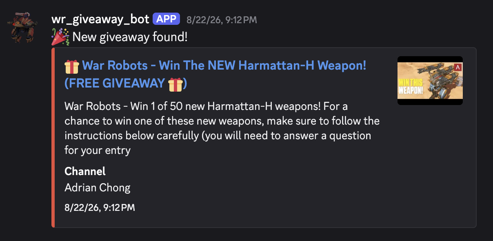

Time to win more War Robots giveaways.
WR Giveaway Bot looks for giveaways from your favorite content creators and shares them in your favorite War Robots discord server so you never miss out on giveaways.
See it in action
Real captures from a live server running the bot.

How it works
For those who are curious about the inner works.
-
Scan YouTube
Searches recent uploads across hashtags and known creators on a recurring schedule.
-
Score & filter
A keyword heuristic scores title and description, then checks the video against a creator whitelist/blacklist.
-
Verification with an AI
Borderline cases gets reviewed by an AI to see if it's actually a giveaway.
-
Post & track
Approved videos are post to your configured channel and everything else are securely stored for research purposes.
Features
Giveaway discovery
Always scanning
It's out there scanning YouTube around the clock, so you don't miss out on any giveaways.
Smart filtering
Only videos from approved content creators and are actual giveaways get posted.
Server subscriptions
One-command setup
/setchannel and the bot is live. That's it.
Per-server settings
Every server keeps its own channel and notification settings.
Notifications
Instant posts
The moment a giveaway clears the filter, it lands in your channel as a rich embed.
Daily digest
A rollup of everything scanned and posted in the last 24 hours, so you're never left wondering what you missed.
Built with
- Python
- discord.py
- PostgreSQL
- OpenAI API
- YouTube Data API
Engineering highlights
A few things under the hood I'm actually proud of.
Async all the way down
Everything runs async — discord.py's event loop plus a connection pool for Postgres — so scanning, LLM calls, and posting to Discord never block each other.
Multi-tenant persistence
Three Postgres tables keep every server's settings and every video's scoring history separate and durable, so nothing gets mixed up between servers.
Duplicate detection
Before anything gets scored, I check it against everything already seen — so the same giveaway never posts twice.
LLM-gated classification
Borderline videos get a pass from an LLM, and only the ones that clear a confidence threshold actually get posted.
Scheduled background jobs
APScheduler runs the scan cycle and daily cleanup on its own — I don't have to kick anything off manually.
Unit-tested scoring logic
The keyword scorer already has real test coverage — next up is wiring that into CI (see what I'm building next) so it runs automatically.
What I'm building next
Curious to see what's next?
Role-based notifcations
Create support for that the bot will ping roles designation for subscribing to this bot in each server.
Option to toggle filter.
Some content creators host legit d-gem giveaways but aren't seen due to small channel size. It's time to let the smaller creators shine.
Feedback on posted giveaways
I want server members to be able to flag false positive and false negatives with a reaction. That feedback becomes training data for the classifier over time.
An admin review queue
Not every server wants the same level of strictness. I'm adding a queue so admins can manually approve borderline videos instead of trusting the auto-filter completely.
Privacy & permissions
Permissions it requests
- View Channels
- Send Messages
- Embed Links
- Read Message History
applications.commandsscope, for the slash commands
What it stores
- Which channel each server wants giveaways posted to
- Metadata for videos it's found to avoid duplicate posts and power the daily digest
This bot does not collect any user data or any other server data. Removing the bot, or deleting the configured channel, automatically deletes your server's stored config.
Try it in your server
Free to add. One command to get started.
Start winning today.